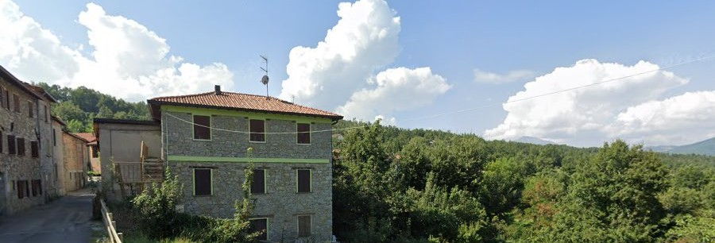

Benvenuti nel sito della Pro Loco di Cerrè Sologno!
Scopri le bellezze del nostro territorio, la sua storia, gli eventi e le iniziative che organizziamo.
Vista del paese
Novità
In programmazione
Scopri il prossimo evento in programmazione a Cerrè!
Scopri l'evento!La storia
Scopri la storia di una delle battaglie meno raccontate di sempre!
Clicca qui!